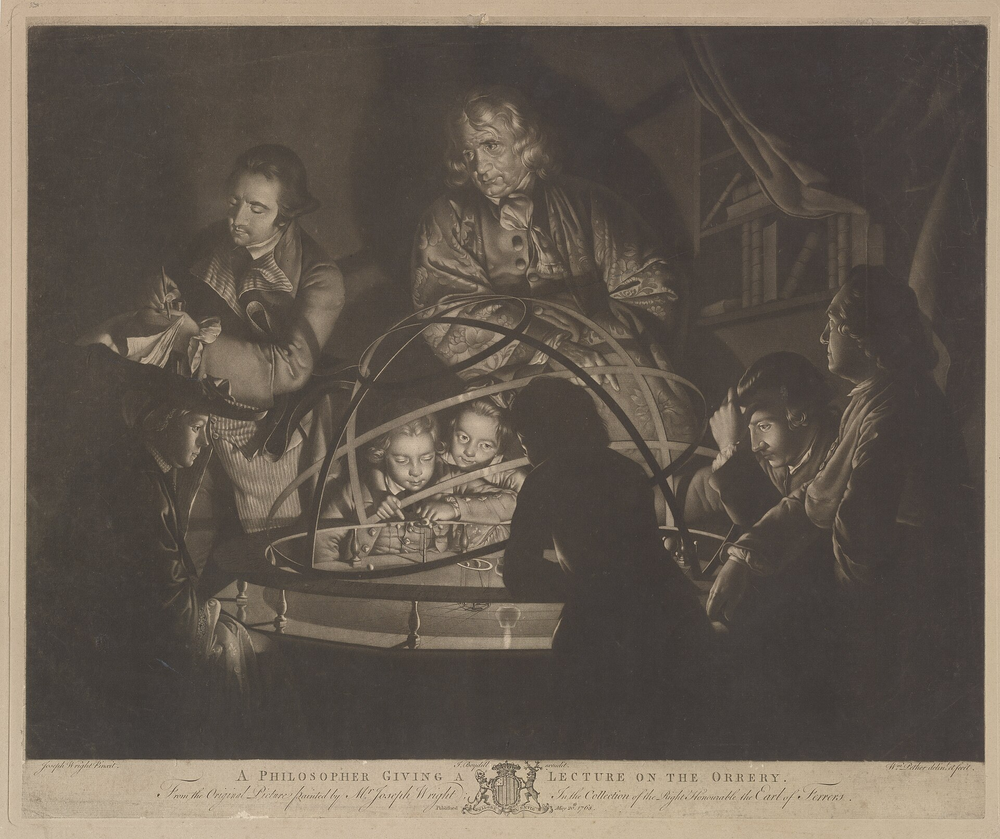
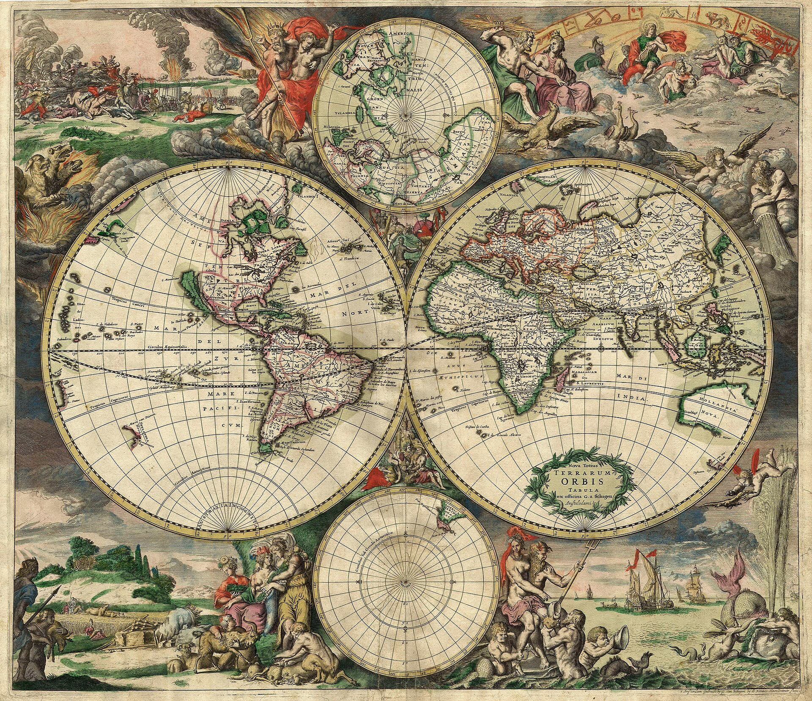

The chain
- Built for a billion strangers
- One menu, take it or leave it
- Feedback disappears into a void
- You are a row in a table

The Bare Necessities makes small, specialized apps for a few hundred people at a time, tuned to them and changed on their word. Most software is a fast-food chain. We're the bar next door.
A philosopher lecturing on the orrery, after Joseph Wright, 1768.
A McDonald's serves millions and knows none of them. Fine, for McDonald's. But it means every dish is designed for the average person, who doesn't actually exist.
We do the opposite. Each app we open is a small, deliberate room. We work closely with the people inside it; they ask for things, and we actually ship them. When the room fills, we don't cram in more tables. We open another bar.
The AI era is what makes this possible: for the first time, a specialized request from one regular can be served at software scale. So we serve it.
Growth, for us, isn't a bigger crowd. It's a better one. Each app opens to a small number of members and grows slowly, in deliberate steps. At the cap the doors don't burst open; a seat frees up only when someone leaves.
If the room is full, you join the queue and take a seat the moment one opens. Fewer people, served properly, beats everyone served the same.

Our first bar. A personal agent you reach on Telegram, named after Satyajit Ray's Professor Shonku: curious, capable, kind and a little dry. It remembers you, runs its own browser, keeps secrets sealed, and writes to you first when something needs doing.
Write to it like a friend. No new app, no dashboard to learn.
Books, compares and fills forms on real sites, behind your login.
A machine of its own for the long tasks, while you get on with your day.
Passwords, codes and cards go straight to the page. The model never sees them.
Native connectors, read-only by default. It asks before it sends.
Compares notes with your friends' agents, with access you grant.
You mentioned Ma's knee has been bad. Shall I set a reminder to call the clinic on Monday?
yes please
Done. Monday, 10:00. Consider it handled.
Today · 7:30
Good morning. It's Tuesday.
• 9:30 Standup
• 13:00 Lunch with Anil (Soi 7)
• One email needs you: Priya, about the lease
Leave by 12:40 for lunch; traffic's heavy.
anything in my inbox i actually need to see?
Two things, really:
• Priya wants the signed lease by Thursday
• Your card statement is due Fri
The rest is newsletters. Want me to draft a line to Priya you can paste?
0:04
0:03
(and the written version, so you have it)
A real exchange, in the plain, dry manner of the Professor. Tap a message and watch him reply, the way he would on Telegram.
Shonkubot
Today
Shonku does real tasks in a real browser: booking, comparing, filling forms behind your login. When a task reaches a password, a one-time code or a card, the secret goes straight into the page through a sealed form. Shonku's mind never sees it.
Sealed form · goes straight to the page
Shonku never receives this. /sites shows and forgets what's saved.
Passwords, one-time codes, card and ID numbers are held apart from the agent entirely. It can use a door without being handed the key, and it asks before it ever buys, sends, posts or deletes.

Shonku runs on ChakraMCP, our own network where AI agents discover one another and negotiate what they'll do together. Add a couple of friends and say “find us somewhere for dinner.” Your agents compare notes (tastes, dietary lines, neighbourhoods) and land on the one place that works for all of you. No group chat, no seventeen “idk, you pick.”
Discovery is public. Access is yours to grant.
The Bare Necessities is a brand, not the whole company. Here's how it fits together.
The company: the house everything registers under.
A network for AI agents to talk to each other. Discovery is public; access is negotiated.
chakramcp.comSmall, specialized apps, each its own little bar. You are here.
Shonku is invite-only. Members get ten invitations each; the keeper holds the rest. Join the waiting list and the Professor writes the moment a seat opens.